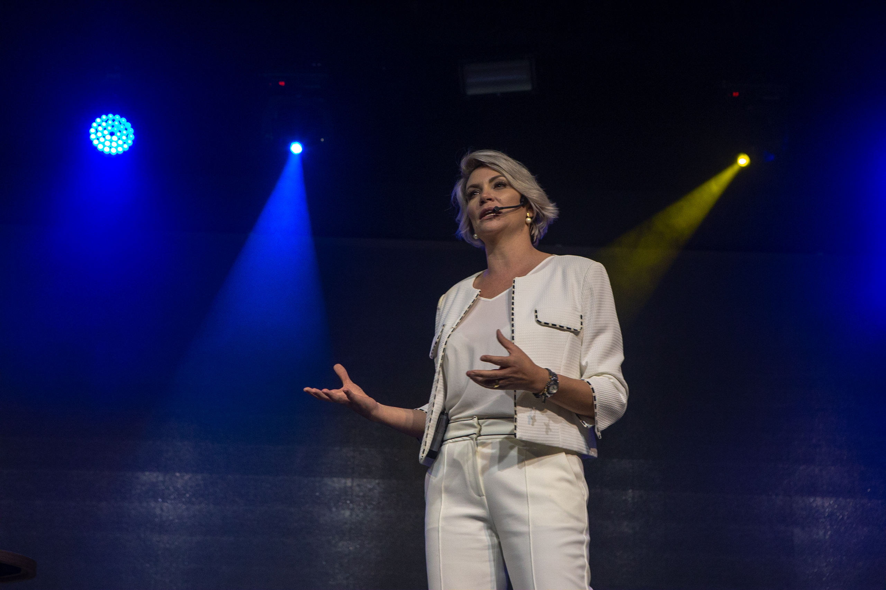
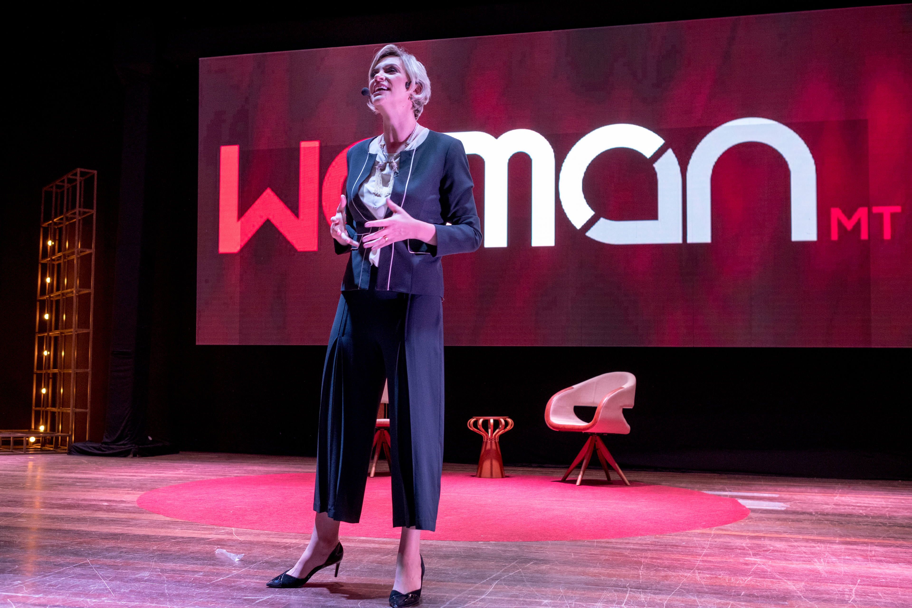
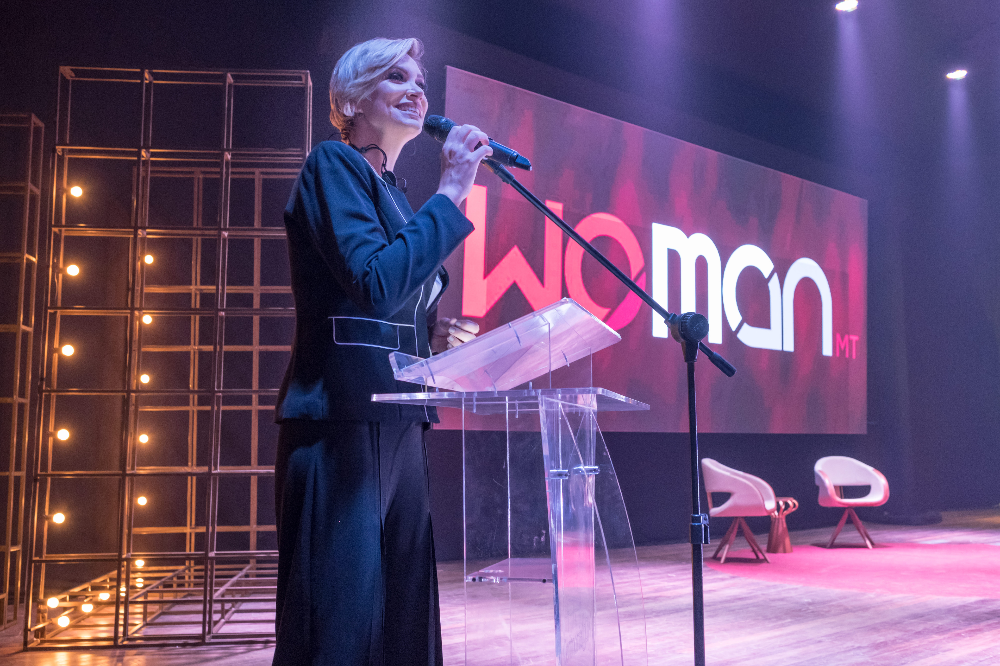
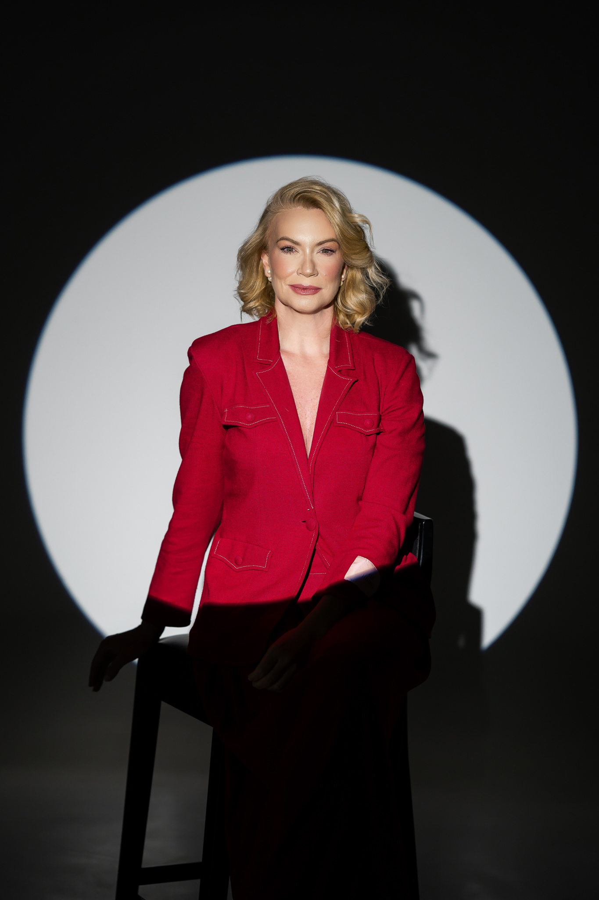

VIRTÙ / Palestras
Uma conversa que aproxima pessoas dos desafios da sua organização.
Palestras com Veridiana Cavalheri sobre liderança, comunicação, performance e autoliderança feminina.
Palestras
Encontre o tema que faz sentido para o seu evento.
O tema certo começa com o contexto do público.
Cada encontro tem uma intenção: desenvolver líderes, mobilizar uma equipe ou abrir espaço para novas reflexões.
As palestras da Virtù conectam esses objetivos a situações e comportamentos que fazem parte da vida de quem participa.

Pessoas, cultura e decisões que sustentam o crescimento.
Uma palestra que conecta cultura, governança, liderança, engajamento e inteligência comportamental à rotina de gestão.
O conteúdo aborda o papel do líder na construção da cultura, decisões orientadas por princípios, diversidade geracional e compreensão dos perfis da equipe.
Para empresários, gestores e lideranças que precisam aproximar estratégia e prática.

O magnetismo de quem fala e é ouvido.
Uma conversa sobre a relação entre emoções, comportamento e comunicação.
A palestra aborda estilos de comunicação, padrões que desgastam vínculos, escuta e formas de expressar ideias e discordâncias com respeito.
Para líderes e equipes que desejam desenvolver a qualidade das relações no trabalho.
As escolhas individuais que sustentam a força de uma equipe.
Uma proposta para refletir sobre autoconhecimento, responsabilidade e consistência nas entregas.
O roteiro percorre cinco atos: autoconsciência, autodireção, autodecisão, autodisciplina e autoevolução. Também aborda inteligência emocional e a participação de cada pessoa no resultado coletivo.
Para encontros que mobilizam diferentes níveis da organização em torno de um novo ciclo.

Uma palestra para mulheres, inspirada em Antifraca.
Um convite para olhar para a própria história, reconhecer recursos pessoais e refletir sobre escolhas.
O conteúdo aborda diálogo interno, autoliderança e construção de hábitos coerentes com a mulher que cada participante deseja ser.
Para eventos e iniciativas voltados ao desenvolvimento pessoal e profissional feminino.
Veridiana Cavalheri
Fundadora da Virtù, palestrante, consultora, mentora e autora de Antifraca.
Sua atuação conecta cultura e comportamento aos desafios de liderança e gestão de pessoas.
Como levar uma palestra ao seu evento
Conte sobre o público, o objetivo e a data prevista.
Nossa equipe conversa com você para alinhar tema, disponibilidade e condições de contratação.
Com a proposta definida, organizamos os detalhes da participação de Veridiana.
Dúvidas frequentes
3 perguntas frequentes
Como escolher o tema?
Comece pelo objetivo do encontro e pelo perfil do público. Nossa equipe pode ajudar a identificar a palestra mais adequada.
Qual é a duração e o formato?
A duração e a modalidade de participação são alinhadas conforme o evento e registradas na proposta.
Como solicitar um orçamento?
Envie o tema de interesse, a data prevista, a cidade e uma breve descrição do público. Se algum detalhe ainda não estiver definido, conte o que já sabe.
Qual conversa precisa acontecer no seu próximo evento?
Fale com a equipe Virtù e solicite uma proposta.